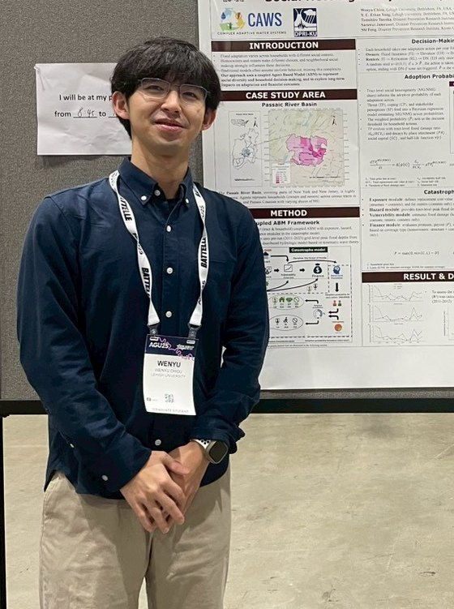

Curriculum Vitæ
Ph.D. Candidate · Civil & Environmental Engineering | Complex Adaptive Water Systems (CAWS) Lab, Lehigh University
My research develops governed LLM-driven agent and multi-agent systems for coupled human–water modeling — bridging empirical behavioral data, interpretable rule-based simulation, and large language models to study human–flood interaction and decision-making under risk.
wec324@lehigh.edu · +1 (484) 937-2528 · Bethlehem, PA, USA · ORCID 0009-0005-8006-1288
github.com/WenyuChiou · linkedin.com/in/wenyu-chiou · wenyuchiou.github.io

Ph.D., Civil & Environmental Engineering, Lehigh University Aug 2024 – present · expected 2028
Complex Adaptive Water Systems (CAWS) Lab · Advisor: Prof. Y.C. Ethan Yang · Center for Catastrophe Modeling and Resilience (CMR)
Dissertation: Advancing Coupled Human-Flood Modeling: From Empirical Foundations to LLM-Driven Multi-Agent Simulation
Research: LLM-driven coupled ABM–catastrophe model framework for household flood adaptation; governed agent framework (WAGF) validating LLM agents against behavioral theory before they act; multi-agent systems for quantitative risk assessment.
M.S., Hydrological and Oceanic Sciences, National Central University (NCU), Taiwan Sep 2021 – Jun 2023
Surface Hydrology Group · Institute of Hydrological and Oceanic Sciences (IHOS) · GPA 4.3/4.3 · Dean’s Award, College of Earth Sciences (Jun 2023). Thesis: groundwater flow characteristics of the Taoyuan coastal zone.
B.S., Earth Sciences, National Central University (NCU), Taiwan Sep 2017 – Jun 2021
GPA 3.9/4.3 · Best Undergraduate Student Project and Report (Nov 2020).
Ph.D. Candidate — Complex Adaptive Water Systems (CAWS) Lab, Lehigh University Aug 2024 – present
Research Assistant — Surface Hydrology Group, IHOS, National Central University 2023 – 2024
Summer Research Intern — National Science and Technology Center for Disaster Reduction (NCDR), Taiwan Summer 2022
Undergraduate Research Intern — Institute of Earth Sciences, Academia Sinica Jul – Aug 2020
Peer-reviewed
[1] Yang, Y. C. E., & Chiou, W. (2026). Leveraging Large Language Models for Agent-Based Simulation of Human–Water System Interactions. Water Resources Research, 62(6), e2025WR042111. doi.org/10.1029/2025WR042111 Published
Manuscripts under review
[2] Chiou, W. Y., Yang, Y. C. E., Tanaka, T., Jamrussri, S., & Feng, S. Household flood adaptation and financial outcomes for homeowners and renters: A coupled agent-based and catastrophe flood modeling framework. Journal of Hydrology. Under review
[3] First-author manuscript — flood-adaptation decision pathways across marginalized and non-marginalized groups, identified via structural equation modeling. Sustainable Cities and Society. Under review
Conference presentations
Chiou, W., Yang, Y. C. E., Tanaka, T., Jamrussri, S., & Feng, S. — “Modeling Long-Term Household Flood Adaptation under Social Heterogeneity: A Coupled Agent-Based Modeling Framework.” Poster NH41E-0449, AGU Fall Meeting 2025.
ISHC 2025, Tokyo, Japan — oral presentation 38-03, July 2025; co-authored with collaborators across Lehigh, FAU, Kyoto, and UTokyo.
AGU Fall Meeting 2023 — abstract; submarine groundwater discharge study combining electrical resistivity tomography, field observation, and numerical simulation.
Dean’s Award, College of Earth Sciences — National Central University Jun 2023
Interdisciplinary Research Fellowship (Hydrology/Geophysics/Geology) — NSTC, Taiwan · $4,000 USD/year 2021 – 2023
Best Undergraduate Student Project and Report in Earth Sciences — National Central University Nov 2020
Undergraduate Student Research Project Grant — NSTC, Taiwan · $1,600 USD total 2020 – 2021
Agent systems
LLM agents · multi-agent systems · structured prompting · validation rules · audit logs · simulation coupling
Programming
Python · TypeScript · R · MATLAB · C++
Software & tools
Git · Jupyter · SPSS · AMOS · ArcGIS Pro
AI tooling
Claude Code · Codex CLI · Cursor · Ollama · MCP · plugin/skill development
research-hub
Gives an AI assistant a CLI, MCP server, REST API, and dashboard for repeatable literature workflows across Zotero, Obsidian, and NotebookLM. Listed in Awesome MCP Servers; CI across 3 OS × 4 Python versions.
WAGF — Water Agent Governance Framework
A governance framework for LLM agents in human–water simulation: domain-rule and behavioral-theory constraints, retry feedback, and audit logs keep the coupled behavioral simulation’s outcomes stable and physically sensible.
FLOODABM
52,141-household flood-adaptation model with NFIP mechanics, calibrated on a 937-household survey; Zenodo-archived companion code with CITATION.cff.
agent-collab-skills
Task splitting, output reconciliation, adversarial debate, shared memory, and acceptance gates for multi-agent runs.
codex-delegate
Cross-platform agent-delegation wrappers with anti-fabrication contracts; regression-tested against a real upstream failure; CI on Ubuntu and Windows.
ai-research-skills
Opens with a 3-gate decision dossier — is the research gap open, a contribution, and feasible? — so design, build, drafting, and reviewer-response stages only run on vetted topics. Cross-runtime SKILL.md contract (Codex, Cursor, Gemini, generic clients).
Graduate Student Committee Member — Lehigh University, Dept. of Civil & Environmental Engineering 2025 – present
awesome-agentic-ai-zh 4.5k+ GitHub stars (July 2026)
Trilingual (zh-TW / zh-Hans / EN) 7-stage roadmap from LLM basics to production multi-agent systems; CI-enforced locale parity; external contributors.
Open-source contributions
10 merged pull requests in third-party open-source projects (BuilderIO/agent-native ×4, incl. a root-caused bug fix with a regression test; langchain-ai/openwiki security fix; ZhuLinsen/daily_stock_analysis ×3; Nanako0129/coralline; NVIDIA/skills).